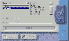

经常上网浏览，下载了大量的HTML格式的网页文件，存在硬盘上，时间一长，就记不清楚这些文件中的具体内容了，以后查找起来可是件麻烦事。最近在网上搜寻到一款国人编写的名叫Makeindex的工具软件，它可以帮助你快速自动地建立这些下载网页文件的目录索引，是一个有效管理网页文件的好帮手。
Makeindex是一款完全免费的中文软件，下载文件大小只有117KB。在Win95/98下直接运行，无需安装。运行后出现Makeindex的工作界面，如图。在左上方的设备列表框和目录列表框中分别选定磁盘驱动器和某个文件夹，相应的就在旁边的文件列表框里列出了该文件夹中的所有HTML（或HTM）文件。在中间的“标题”栏里填上你给这个网页索引起的名字（缺省是“我的网页索引”）。在“文件名”栏中填上保存这个网页索引的文件名（缺省是Myidx000HTM）。好了，现在你只要点击右上方的“生成”按钮，Makeindex就会快速扫描所选文件夹中的所有HTML（或HTM）文件，并有扫描进度的指示，最后生成一份网页索引文件就自动保存在这个文件夹里。
然后，用浏览器打开这份网页索引文件，可以看到其中的每一项都链接到了相应的网页文件。当然，你还可以在上面的工作界面中，通过选取“清单”或“表格”，来定置网页索引的最后生成形式。
怎么样，现在是不是看上去一目了然？再也不会面对着一大堆网页文件而理不出头绪了。该软件可在http:∥abu126com或http:∥wwwmydowncom/Detailed/4000html下载，下载文件大小为60KB。
(西安 金涛) |